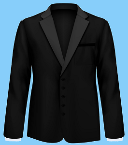
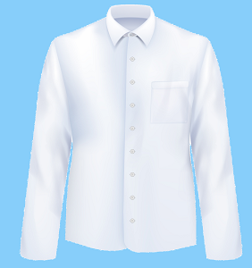
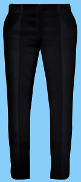
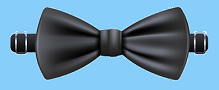
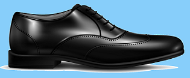
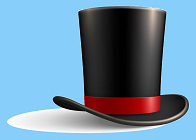

Jak powinien wyglądać strój uczniowski
Strój uczniowski powinien składać się z:
czarnej marynarki, 
białej koszuli, 
czarnych spodni, 
krawatu lub muszki,

czarnych eleganckich butów, 
oraz cylindra. 
Obraz autorstwa macrovector
na Freepik